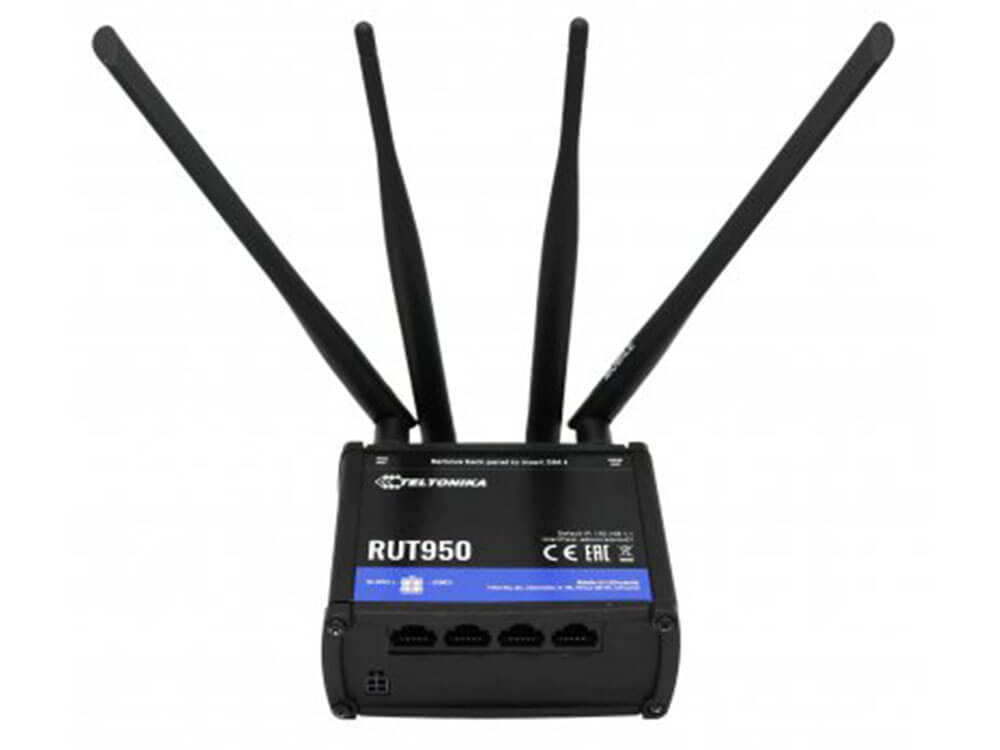
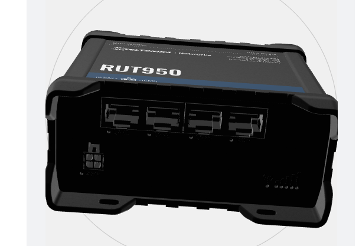

Rede¶
O Twizy utiliza um roteador industrial Teltonika RUT950 4G/LTE como gateway de rede embarcado, combinado com uma VPN mesh NetBird para permitir acesso remoto seguro a todos os nós ROS2 de qualquer lugar com conexão à internet.
Arquitetura¶
graph LR
subgraph vehicle["Twizy (embarcado)"]
rut950["RUT950\n(roteador 4G/LTE)"]
pc["PC de bordo\n(Ubuntu 22.04)"]
ds["FastDDS\nDiscovery Server\n:11811"]
pc --- ds
rut950 --- pc
end
subgraph remote["Operador Remoto"]
laptop["Laptop\n+ Controle Xbox"]
teleop["teleop_joy_xbox\n(nó ROS2)"]
laptop --- teleop
end
rut950 -->|"4G/LTE"| internet["Internet"]
internet -->|"NetBird VPN\n(mesh P2P)"| laptop
teleop <-->|"Tópicos ROS2\nvia Discovery Server"| dsRoteador RUT950¶
O RUT950 da Teltonika fornece conectividade móvel ao veículo.

| Especificação | Valor |
|---|---|
| Tecnologia | 4G LTE Cat 4 (até 150 Mbps download), 3G, 2G |
| SIM | Dual SIM com failover automático |
| WiFi | IEEE 802.11b/g/n (AP + STA) |
| Ethernet | 4 portas × 10/100 Mbps (1 WAN + 3 LAN) |
| CPU | Atheros Wasp, MIPS 74Kc, 550 MHz |
| RAM | 128 MB DDR2 |
| Armazenamento | 16 MB Flash |
| Alimentação | 9–30 VDC (conector industrial 4 pinos) |
| SO | RutOS (Linux baseado em OpenWrt) |
| Carcaça | Alumínio com painéis de plástico |

Instalação física
As credenciais de WiFi/configuração do roteador estão em uma etiqueta na parte traseira do aparelho. É necessário modelar e imprimir em 3D uma estrutura de suporte para fixar o roteador na parte traseira do veículo.
Chip SIM
A conectividade foi validada com um chip de teste. É necessário adquirir um plano dedicado para uso em produção.
VPN NetBird¶
O NetBird cria uma VPN mesh criptografada entre todos os dispositivos da equipe. Cada máquina recebe um hostname e IP estáveis na rede NetBird, independentemente da rede física ou NAT.
Por que NetBird¶
- Não precisa de IP estático no veículo — o RUT950 tem IP 4G dinâmico
- Peer-to-peer quando possível (baixa latência), fallback via relay quando o NAT bloqueia conexão direta
- Funciona sobre 4G, WiFi e qualquer conexão à internet
- Plano gratuito disponível para equipes pequenas
Instalação (todas as máquinas)¶
Autenticação e conexão¶
Verificação¶
netbird status
# Tanto o veículo quanto o laptop do operador devem aparecer como "Connected"
ping twizy
Considerações de rede para ROS2¶
Os containers Docker do ROS2 devem usar network_mode: host para que o tráfego ROS2 seja roteado pela interface NetBird (wt0).
Conflito com interface GigE da câmera
O FastDDS Discovery Server deve ser configurado para escutar apenas na interface NetBird (wt0), não na interface GigE da câmera (169.254.x.x).
FastDDS Discovery Server¶
O ROS2 padrão depende de multicast para descoberta de nós, o que não funciona através de túneis VPN ou entre máquinas em redes diferentes. A solução é um FastDDS Discovery Server centralizado rodando no veículo, com o qual todos os nós (locais e remotos) se registram via unicast.
Como funciona¶
sequenceDiagram
participant V as PC do Veículo
participant DS as Discovery Server (porta 11811)
participant O as Operador Remoto
V->>DS: registrar nós (local, via 127.0.0.1 ou wt0)
O->>DS: registrar nós (via IP NetBird)
DS-->>V: lista de peers
DS-->>O: lista de peers
V<-->>O: troca de tópicos ROS2 (unicast)Configuração no veículo¶
FROM ros:humble-ros-core
RUN apt-get update && apt-get install -y \
ros-humble-rmw-fastrtps-cpp \
fastdds-tools \
&& rm -rf /var/lib/apt/lists/*
ENTRYPOINT ["fastdds", "discovery"]
services:
discovery-server:
build:
context: .
dockerfile: Dockerfile.server
container_name: fastdds_server
network_mode: "host" # obrigatório para acessar interface wt0 do NetBird
command: -i 0 # ID do servidor de descoberta 0
restart: unless-stopped
docker compose up -d discovery-server
# Ou sem Docker:
source /opt/ros/humble/setup.bash
fastdds discovery -i 0
Conflito com interface GigE da câmera
Executar o Discovery Server sem vinculá-lo a uma interface específica fazia com que ele anunciasse na interface GigE da câmera (169.254.x.x), bloqueando as conexões da câmera.
Variáveis de ambiente¶
Lado do veículo:
Lado do operador:
export ROS_DISCOVERY_SERVER=twizy:11811 # hostname NetBird do veículo
export ROS_SUPER_CLIENT=true # desativa multicast, força uso exclusivo do Discovery Server
export ROS_DOMAIN_ID=0
export RMW_IMPLEMENTATION=rmw_fastrtps_cpp
| Variável | Valor | Descrição |
|---|---|---|
ROS_DISCOVERY_SERVER |
twizy:11811 |
Hostname NetBird (ou IP) do veículo com o servidor |
ROS_DOMAIN_ID |
0 |
Deve ser idêntico em todas as máquinas da rede |
ROS_SUPER_CLIENT |
true |
Desativa multicast, força uso exclusivo do Discovery Server |
RMW_IMPLEMENTATION |
rmw_fastrtps_cpp |
Define o FastDDS como middleware ROS2 |